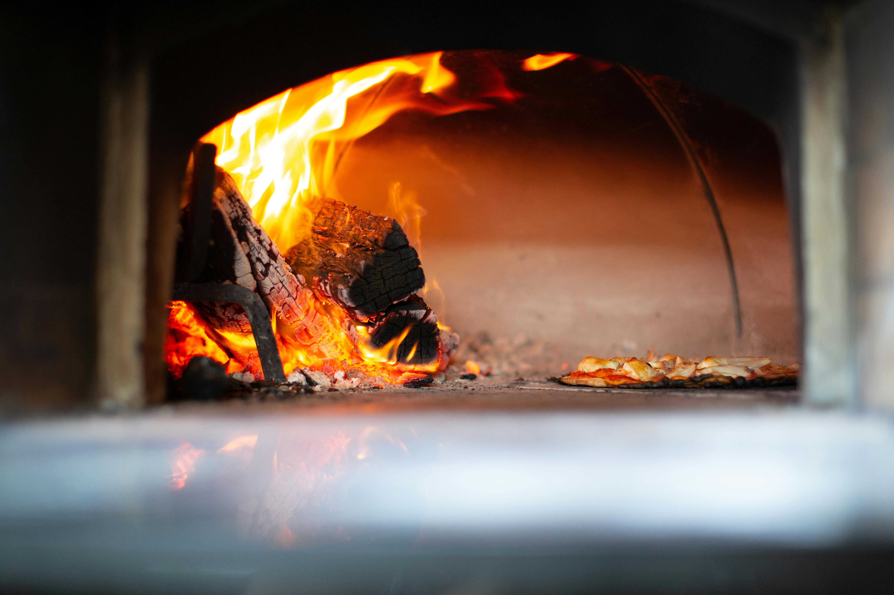
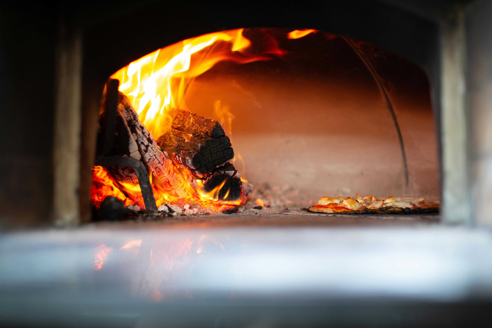
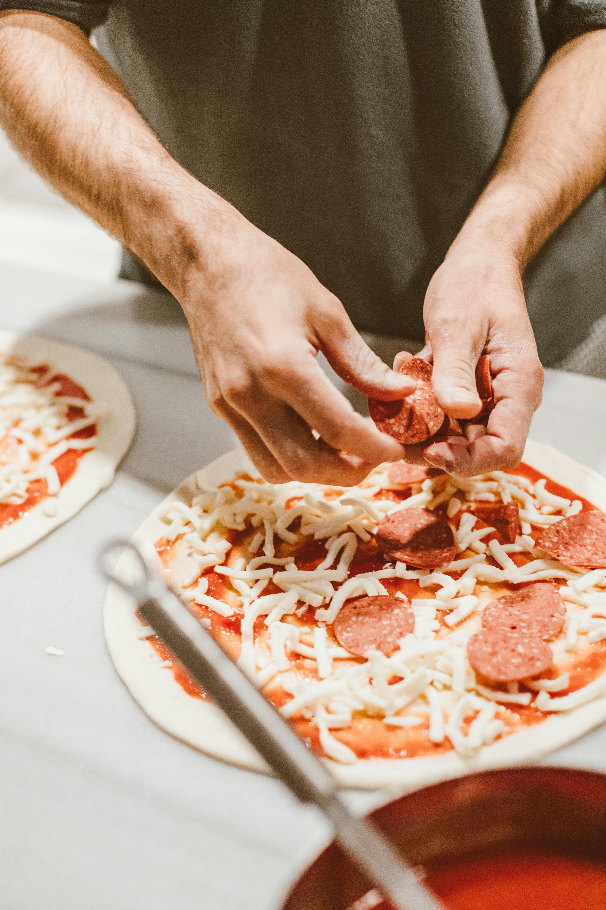
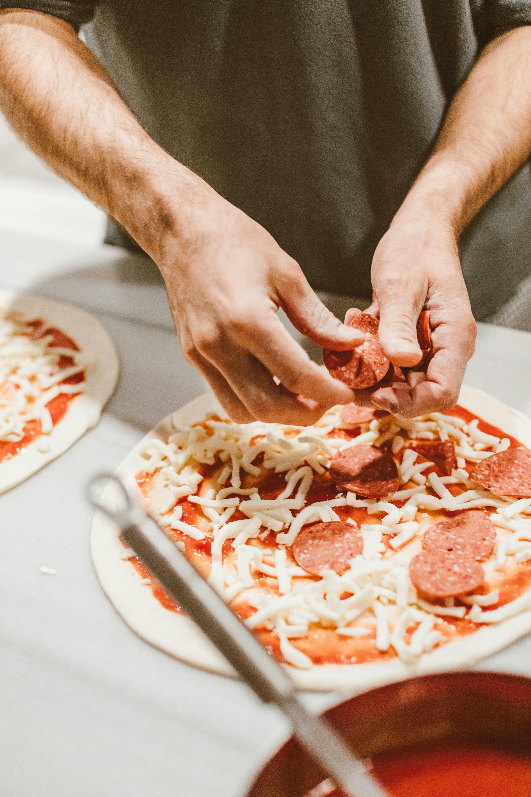

Non solo pizza
Pizzeria e friggitoria Scandolara
La nostra filosofia
A Non Solo Pizza, siamo molto più di una semplice pizzeria: siamo una famiglia che crede nel valore della tradizione, nella qualità degli ingredienti e nel piacere del buon cibo.
Oltre alle nostre pizze, preparate con passione e attenzione, offriamo anche una selezione di specialità fritte che portano in tavola sapori autentici e irresistibili.
La nostra filosofia
 

 

Non Solo Pizza, siamo molto più di una semplice pizzeria: siamo una famiglia che crede nel valore della tradizione, nella qualità degli ingredienti e nel piacere del buon cibo. Oltre alle nostre pizze, preparate con passione e attenzione, offriamo anche una selezione di specialità fritte che portano in tavola sapori autentici e irresistibili.
>>>>>>> 042fa888e84fc91db8420ef21497ab61f4562c2fLa qualità è al centro di tutto ciò che facciamo. Utilizziamo esclusivamente ingredienti freschi, locali e a chilometro zero, perché crediamo che il legame con il territorio sia fondamentale per offrire un prodotto genuino e sostenibile. Ogni impasto, ogni condimento e ogni frittura sono realizzati con cura e rispetto, seguendo ricette e metodi tramandati in famiglia.
Per noi, cibo significa condivisione e calore, e il nostro obiettivo è far sentire ogni cliente parte della nostra storia. Non importa se scegli una pizza fragrante o una delle nostre croccanti specialità fritte: ogni boccone è un gesto d’amore verso la tradizione e la buona cucina.
Non Solo Pizza è il luogo dove passione, famiglia e territorio si incontrano, per offrirti un’esperienza autentica e indimenticabile.
Il nostro menù completo
Tasto per download
Dove e quando trovarci
Indirizzo: Via Scandolara 81, Scandolara TV
Orari: